IL SAN
CARLONE/ARONA,LAGO MAGGIORE
サンカルロの巨像/アローナ、マッジョーレ湖
ミラノ、マルペンサ空港にも程近いマッジョーレ湖。
湖畔には桁の外れた大金持ちの別荘が並ぶイタリアでも有数の避暑地だ。
この湖の北半分はもうスイス。涼しいのだ。
そんなマッジョーレ湖を見下ろす高台の上に大仏さんがいる。
と、いってもここはイタリア、正確には大仏さんではなく大司教枢機卿像なんですけど。
アローナの駅前からタクシーに乗る。イタリアの地方都市にはタクシーが少ないので一緒に待っていたお姉ちゃんと相乗り。
で、私が行き先を告げるとお姉ちゃん、怪訝そうな顔をしてました。
ああ、どこへいっても大仏さんってそんな扱い（涙）。
でも、運ちゃんは私の事を敬虔なカトリック教徒と思ったらしく、ラジオを牧師の説教チャンネルに合わせてくれて一緒にお祈りをしよう！と言ってきた。
どうでもいいけどハンドル離さないでください・・・
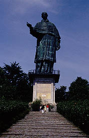
で、サンカルロ像に到着。入口の説明版を読む。
この像が完成したのが1698年。300年以上も前の大仏さんなのだ。
ブロンズ製で台座込みの総高さは35.1メートル、像自体の高さは23.4メートルとある。
大仏界の習しによって例のごとく指の長さから顔の大きさ、鼻の高さなどがずら〜っと書き込まれている。
そしてこの大仏さん、何と胎内潜りが出来るのだ。
この高さと胎内潜り、17世紀末という時代からすれば驚異的な技術だったのではなかろうか。恐るべしヨーロッパ大仏界。
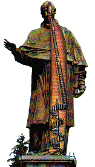 内部はこんな風になっているらしい。
最初の螺旋階段は何となく分かるけど後半の鉄砲階段は無理がないか？
一抹の不安を抱きつついざ大仏に向かう。
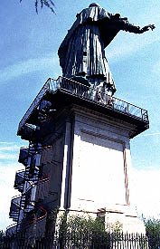
台座の裏に螺旋階段がある。
登るとそこは展望スペースになっていてマッジョーレ湖が良く見える。
美しい。が、湖を愛でる趣味のない私にはどうでもいい。とにかく胎内潜りだ。
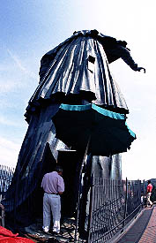
裏手に入口があり、おじさんが何やら仕切っている。どうやら人数制限があるらしい。
幾ら大きいといっても胎内巡りにはちと厳しいサイズ。それもしかたあるまい。
で、順番が回ってきていよいよ胎内へ。
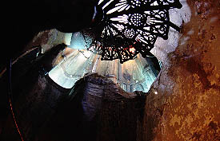
螺旋階段の途中から上を見上げた図。
服と服の間には隙間が空いていて明かり取りになっている。
かなり狭い。
スペース的に一番広いと思われた裾の部分でコレかい！上から下りて来る太めの御婦人とすれ違うには螺旋階段の柱にセミのように抱きつかなければ通れないくらい狭い。
螺旋階段が終わると今度はいよいよ鉄砲階段である。螺旋階段が上手く取付かなくてオーバーハングの階段になっているぞ。
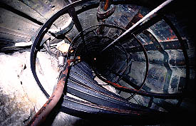 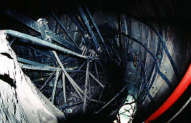
・・・これは階段というよりは限り無く梯子に近いじゃないか。
しかも登り下り共用。様子を見ていると「お〜い、登るぞ〜」「よっしゃあ！来いや！」的な感じで行き来しているようだ。
で、鉄のリングに囲まれた中をヨイショヨイショと登っていく。
右には脇の下辺りだろうか、比較的広いスペースがあり、補強用の鉄骨が走り回っていた。意外と無骨な感じである。
一般的には19世紀末に出来たエッフェル塔が鉄骨建築の権化のようにいわれるがコレを見ると17世紀末に出来たこの大仏さんのほうが遥かにヨーロッパの高層＆鉄骨建築のレベルの高さを物語っているような気がするんですけど・・・ま、エレベーターとかないですけど。
途中で下を見ると「コレは落ちたらヤバい」という高さになってきた。
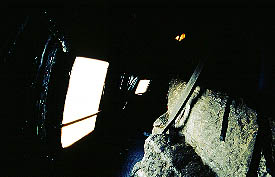  で、何とか頂上に到着。窓からの風が気持ち良い。
で、何とか頂上に到着。窓からの風が気持ち良い。
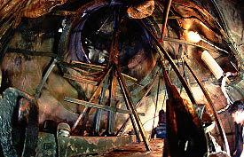 最上階の内部はこんな感じである。
一段高くなっているところにイーゼルのような鉄骨が組んである。
登ってみると・・・
 うへえ〜、外から見たらあんな優しそうな顔だったサンカルロおじさま、裏の顔はこんなだったのかあ〜。
・・・ちなみに目のところには穴が開いていて外が見えます。あと、鼻の穴も。
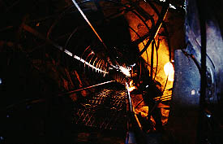
と、いうわけでまた恐怖の竪坑を下りるのであった。
「お〜い、下りるぞ〜！！」
うへえ〜、外から見たらあんな優しそうな顔だったサンカルロおじさま、裏の顔はこんなだったのかあ〜。
・・・ちなみに目のところには穴が開いていて外が見えます。あと、鼻の穴も。
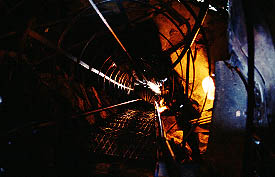
と、いうわけでまた恐怖の竪坑を下りるのであった。
「お〜い、下りるぞ〜！！」
ところで、このサンカルロ像を訪れるにあたって事前のリサーチではこんな絵を入手していた。
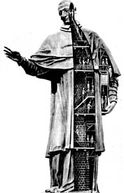
この絵によると今、登ってきた内部の様子とはずいぶんと違う。大体登るのが凄く楽そうじゃないか。
しかも見れば左手に持っている本の中にまで人が入っているぞ。楽しそうじゃないか。
というわけでその由を入口にいたおじさんに質してみた。するとおじさんイタリア語で何やら話している。
意味は分からないがゼスチャーからすると「あ〜、ありゃ冗談よ。うひゃひゃひゃひゃ・・・」と言っている様な気がしたのだが、ホントのトコはどうなんでしょうか？
詳しい事をご存じの方、または「俺は本の中に入ったぞ！」という方、おしらせ下さい。
最後にデザートをどうぞ
珍寺大道場in伊太利
珍寺大道場 HOME